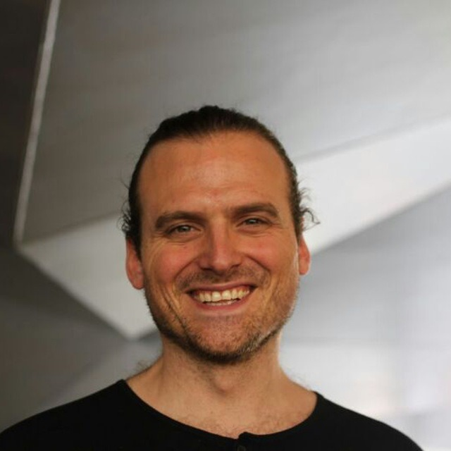

Consultor‑IA Digital
Consultoría digital y desarrollo tecnológico artesano diseñado desde la Sierra del Rincón (La Hiruela, Madrid) para aportar sentido, cercanía y el máximo impacto técnico a tus ideas.
Una consultoría pensada para crear valor real
Cada proyecto es diferente. Trabajo de forma cercana para entender tus objetivos y construir la solución adecuada, sea grande o pequeña.
Web & Diseño Digital
Desarrollo Web de Autor
Sitios y aplicaciones web a medida, rápidos y de código limpio. Diseñados con frameworks de vanguardia para garantizar rendimiento y durabilidad.
Web¿Cómo trabajo la web?
Análisis de necesidades, arquitectura limpia con Vite / Vanilla JS / Vue, optimización de carga, y entrega de código perfectamente documentado.
VanillaJS · Vite · VueEstrategia de Producto Digital
Análisis de marca, definición de audiencia, lenguaje y comunicación adaptados. IA para automatización de procesos y flujos de trabajo.
Estrategia¿Qué incluye?
Análisis de identidad de marca, adaptación del lenguaje al canal, generación de imágenes con IA, y formación con Canva para autonomía del cliente.
IA · Canva · MarcaAplicaciones Móviles
Apps multiplataforma de alto rendimiento con acceso a funciones nativas del dispositivo, desde una única base de código.
AppsTecnología que uso
CapacitorJS v8 permite empaquetar apps web como aplicaciones nativas en iOS y Android, con acceso a cámara, GPS, notificaciones y plugins nativos sin sacrificar velocidad.
CapacitorJS v8 · iOS · AndroidInteligencia Artificial
Asistentes y Automatización
Bots conversacionales y flujos automatizados para reservas, soporte, generación de contenido y tareas administrativas repetitivas.
BotsPlataformas y canales
Integración con Telegram, WhatsApp y plataformas web. Conexión con APIs de IA (OpenAI, Google AI Studio) o modelos locales para máxima privacidad.
Telegram · WhatsApp · APIConsultoría de IA Adaptada
Integración de modelos de lenguaje adaptados exactamente a tu flujo de trabajo: administrativo, creativo o de atención al cliente.
IAModelos y arquitecturas
LLMs locales (Ollama, Llama.cpp), APIs cognitivas (OpenAI, Gemini), sistemas RAG con embeddings para respuestas contextuales sobre tu propio contenido.
LLM · RAG · OllamaFormación en IA
Talleres prácticos y mentorías individuales para que tu equipo entienda y use la IA con criterio propio, de forma autónoma.
Formación¿Qué aprenderás?
Prompt engineering, uso avanzado de herramientas de IA generativa, integración de flujos automatizados y criterio para evaluar qué herramienta usar y cuándo.
Prompts · Flujos · CriterioMaker & Electrónica
Prototipado Físico
Fabricación digital en 3D (FDM) y corte láser de piezas personalizadas. Desde carcasas electrónicas hasta señalética integrada al territorio.
3D · LáserMateriales y procesos
Diseño 3D paramétrico (Fusion 360, Blender), impresión FDM en PLA / PETG / TPU, corte y grabado láser en madera, acrílico y cartón.
FDM · Láser · Fusion360Mechanics & Electronics
Docente en IED Madrid. Arduino, motores, engranajes, mecanismos y brazos robóticos a pequeña escala. Hardware a medida con microcontroladores.
IED Madrid¿Qué construimos?
Sistemas de control con ESP32 / Arduino, motores paso a paso, servos, sensores de temperatura, humedad, movimiento. Proyectos de telemetría y domótica agroecológica.
ESP32 · Arduino · SensoresArte & Instalaciones
Instalaciones Interactivas ↗
Experiencias multimedia permanentes y temporales que integran software creativo, hardware y sensores para espacios culturales y festivales.
Ver obrasProyectos destacados
Instalaciones para Fundación COTEC, festivales y espacios culturales. Tecnología al servicio del arte y la narrativa territorial.
COTEC · FestivalesHistórico de Workshops ↗
Archivo completo de talleres facilitados: programación creativa, robótica, fabricación digital y electrónica programable.
Ver todosÁreas principales
Processing, p5.js, Arduino, ESP32, impresión 3D, corte láser, y pensamiento computacional para adultos y jóvenes.
Processing · Arduino · LáserDocencia & Formación
Universidades Online
Profesor Colaborador en la UOC de Programación de Aplicaciones Interactivas y Programación Creativa (Grado de Diseño). Docente de Prog. Interactiva en la UNIR.
UniversidadAsignaturas
Programación creativa con p5.js / Processing, desarrollo de aplicaciones interactivas, diseño de experiencias digitales. Modalidad online para alumnos de toda España.
UOC · UNIR · p5.jsMásters Presenciales
Profesor de Creative Technologist en Hoola (Valencia). Herramientas IA para Arte (ML, Generación de Imagen y Vídeo) en la UTAD (Madrid).
MásterContenidos impartidos
Perfil de Creative Technologist y su práctica profesional en Hoola. En UTAD: Machine Learning aplicado al arte, Stable Diffusion, ControlNet y generación de vídeo con IA.
Hoola · UTAD · IA GenerativaTalleres Maker & Electrónica
Workshops de electrónica programable, robótica y fabricación digital en centros como Medialab-Prado, IAAC Barcelona e IED Madrid.
TalleresHerramientas y contenidos
Arduino, ESP32, sensores, motores, impresión 3D y corte láser. Talleres para profesionales, estudiantes y público general en contextos culturales e institucionales.
Arduino · 3D · Láser · ESP32CoderDojo — Infantil & Familias
Talleres de programación, robótica y electrónica para niños y niñas en el marco de CoderDojo. Introducción al pensamiento computacional desde edades tempranas.
CoderDojoActividades
Scratch, programación por bloques, robótica con mBot y kits Arduino educativos. Sesiones lúdicas diseñadas para que la tecnología sea accesible y divertida desde los 7 años.
Scratch · mBot · Arduino EduCarles Gutiérrez Vallès
Creative Technologist & Consultor de Innovación
Un perfil multidisciplinar para el mundo real:
Vengo del diseño de interacción, la programación creativa, el prototipado físico y la docencia. Trabajar desde la Sierra del Rincón no es un capricho: es una postura. El territorio rural tiene necesidades concretas, a veces invisibles para quien diseña tecnología desde una gran ciudad. Parto de escuchar las necesidades y propongo soluciones digitales que tienen sentido, que duran y que generan autonomía.

CARLES GUTIÉRREZ
CREATIVE TECHNOLOGIST & RURAL DIGITAL CONSULTANTProfesor Colaborador en UOC (Prog. Interactiva + Prog. Creativa / Diseño) y UNIR. Máster en Hoola (Valencia) e IA para Arte en UTAD (Madrid). Talleres CoderDojo y electrónica maker.
Creative Technologist en Now Havas y proyectos de innovación y retail para Fundación COTEC.
Docente de Mechanics & Electronics en el IED Madrid. Fabricación digital (3D/Láser) en centros como Medialab-Prado e IAAC Barcelona.